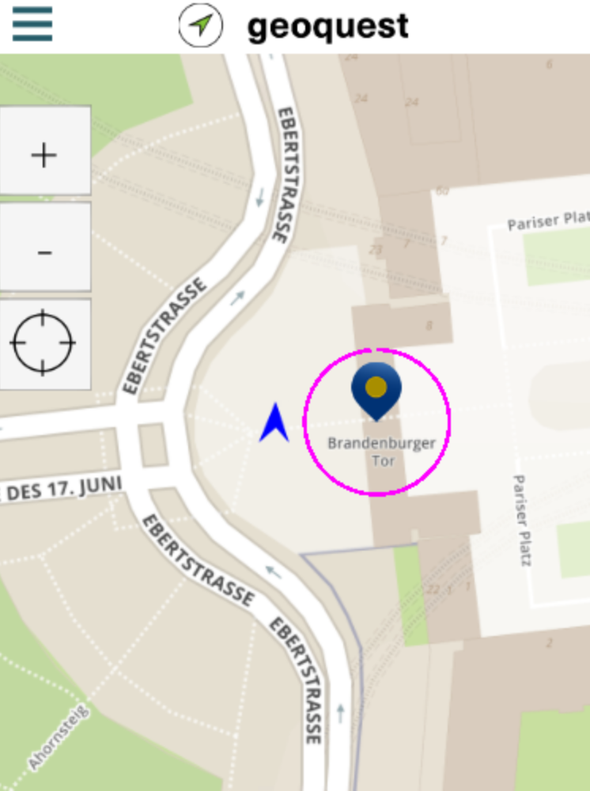
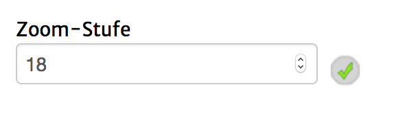

Achtung: Der Seitentyp für Google Maps ist aktuell nicht benutzbar. Bitte benutze stattdessen die OpenStreetMap-Version.
Mit diesem Seitentyp ist es möglich auf dem Gerät eine Karte mit GPS-Positionen anzuzeigen. Alle Hotspots, welche als "sichtbar" gesetzt sind, sind auf dieser Kartenansicht zu sehen.
Wenn du die "onEnter"- oder "onLeave"-Ereignisse eines aktiven Hotspots benutzten möchtest, musst du mindestens einmal eine Karte geöffnet haben. Die GPS-Suche bleibt danach aber weiterhin geöffnet, sodass du, wenn du keine Kartenansicht in deiner Quest anzeigen möchtest, im "onStart"-Ereignis dieser Seite direkt zu einer anderen Seite navigieren könntest.
Auf dem Mobilgerät sieht die Kartenansicht ungefähr so aus:

Dabei zentriert die Karte standardmäßig auf die sichtbaren Hotspots. Mit einem Klick auf den "GPS"-Button lässt sich die Ansicht direkt an die eigene Position binden. Dann wird die Karte auf die eigene Position zentriert, folgt dieser und dreht sich in die Richtung, in die der Spieler gerade schaut.
Folgende Einstellungsmöglichkeiten gibt es für diesen Seitentyp:
|  | Zoom-Stufe: Diese Zahl gibt an, in welcher Zoom-Stufe, die Karte beginnt. Danach ist es durch Benutzen der "+"- und "-"-Buttons weiterhin möglich diese zu verändern. Standardmäßig sollte ein Wert zwischen 13 und 20 eingetragen werden. |